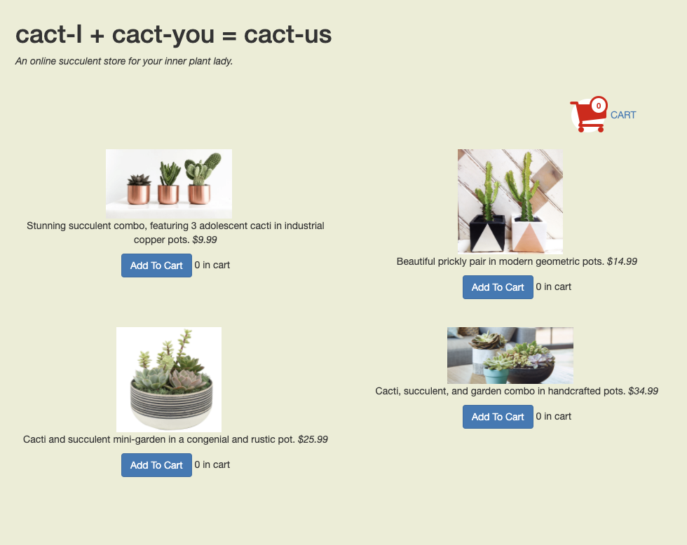
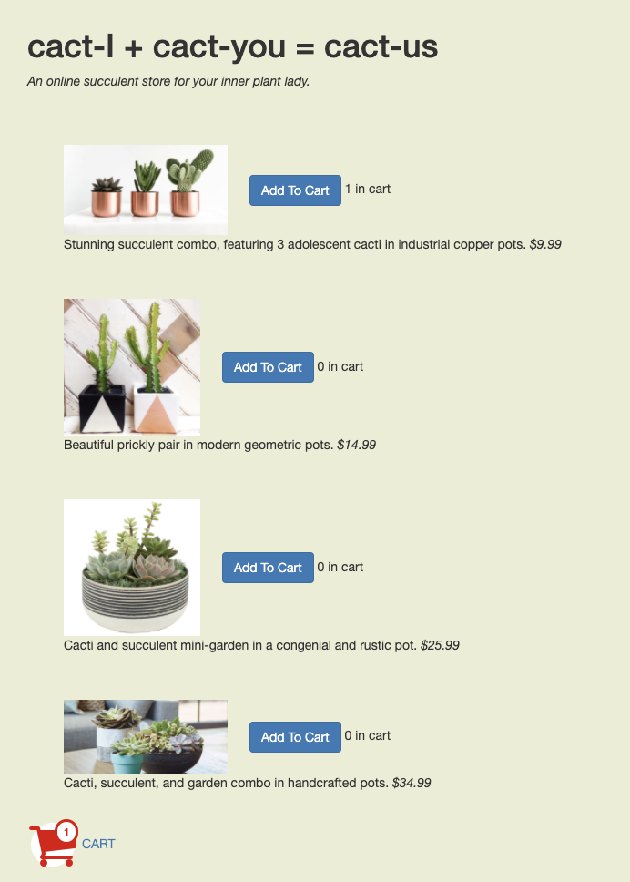
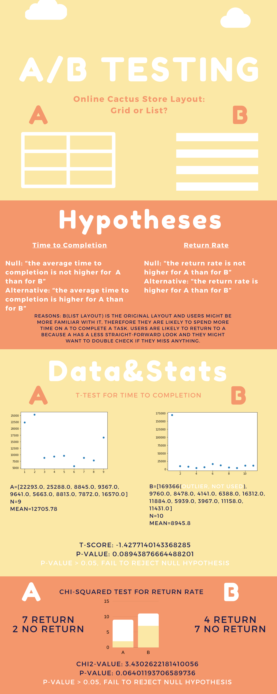

A/B testing is commonly used for testing variations of user interfaces. Here we will explore an example of A/B testing on two different layouts of the same website - Cactus
A or B
Cactus is a simple website for users to purchase cactus. Our two versions of the shopping page are the same in color scheme/text hierarchy but different in item layout. As we can see below, A has a grid layout and B has a list layout.
A

B

Data Processing & Script Running
There are 50/50 chances for a user to land on either A or B when they go to the website. I had some hypotheses on the completion time and the return rate for version A/B.
After letting the testing website running for a couple of days, I gathered the data from the log and extracted out 1. the time each user spent on completing a purchase, and 2. whether or not they returned to the shopping page after checkout. I then ran a script to calculate the statistical significance for each hypothesis.

Conclusion & Takeaways
The A/B testing results fail to reject both null hypotheses, which means it does not take longer time to complete a purchase for A than for B and A does not have higher return rate than B.
Whether more time to completion and a higher return rate should be considered a good thing depends on the actual business/purpose of the interface. In this case, I would like to consider more time to complete the purchase a bad thing and a higher return rate a good thing.
One obvious limitation I encountered was not enough sample points - for the time to completion data, my effective nA + nB was 19; for the return rate data, my effective nA + nB was 20. The small sample size gives a less meaningful statistical result.
Another limitation was that there were more than one variable changes between version A and version B - although the most significant change was the layout of the items, the shopping cart button location was also modified between the two versions. And the multiple variable changes could potentially give false positive in larger sample size testing.